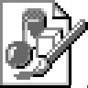

BMPImages.jl
This package provides the I/O support for Windows Bitmap (*.bmp) files.
Basic Usage
To load a BMP image (for example, "example.bmp"), use read_bmp().
{kind=link}
using Colors
using FixedPointNumbers
using BMPImages
img = read_bmp(joinpath("assets", "example.bmp"))![]()
To save a image as a BMP image, use write_bmp().
gsimg = Gray{N4f4}.(img) # to 4-bit grayscale image
write_bmp(joinpath("assets", "grayscale.bmp"), gsimg);0x00002078
FileIO Integration
BMPImages.jl supports the FileIO interface, but does not register the loader and saver by default. To make the registration, run add_bmp_format().
Indexed Color Images
The BMP format supports 1-, 4-, and 8-bit indexd color images. When BMPImages reads an indexed color image, it replaces the index with the actual color. Also, when saving an image, if the number of colors used is not greater than 2, 16, or 256, it is saved as an indexed color image with the corresponding bit depth (1, 4, or 8).
Grayscale Images
A special case of indexed color images is grayscale images.
BMPImages reads an indexed color image as a Gray image instead of an RGB image only if the color table is uniformly placed black to white. In other words, an image whose indices and intensities do not completely correspond is read as an RGB image, even if all the colors used are gray.
For example, the "grayscale.bmp" saved in the example above is loaded as a Gray{N0f8} array.
{kind=link}
julia> summary(read_bmp(joinpath("assets", "grayscale.bmp")))"128×128 Array{Gray{N0f8},2} with eltype Gray{FixedPointNumbers.N0f8}"
The exception is binary (black and white) images. BMPImages returns Gray{Bool} images for binary images regardless of whether the color table is in white-to-black or black-to-white order.
After you have loaded an image, you can convert its color type to your desired one.